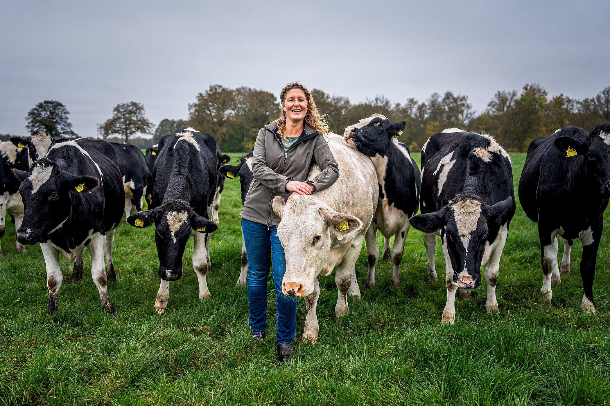
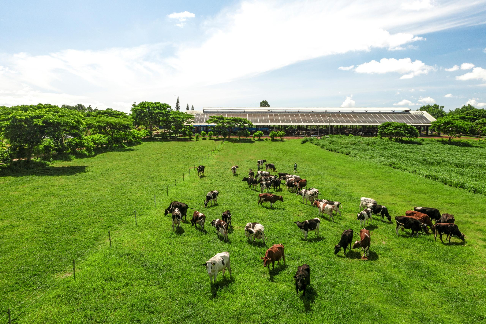
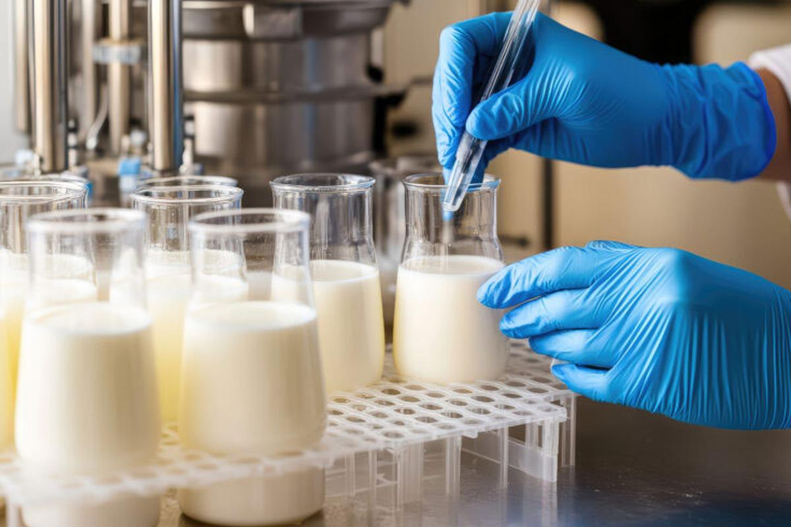

01
01
Care for Our Animals
Attentive daily care and suitable resting spaces are important parts of a responsible dairy routine.
Discover the people, care, and everyday dedication behind our dairy farm. From our farm to your family, we believe that good dairy begins with thoughtful care and a commitment to quality.

Our farm is more than a place where dairy begins. It is a community built around care, responsibility, and a shared commitment to bringing dairy goodness to families.
Every day brings an opportunity to do things thoughtfully, from caring for our animals and maintaining clean surroundings to handling our dairy products with attention. We believe that quality starts with the small things we do consistently.
Putting responsible daily care at the heart of our work.
Paying attention to cleanliness and careful handling.
A good day on the farm starts with care and consistency. Discover the everyday routines that help us look after our animals and maintain a clean, welcoming farm.
01
Attentive daily care and suitable resting spaces are important parts of a responsible dairy routine.
 02
02
Consistent feeding routines and access to suitable feed help support the wellbeing of our dairy animals.

03Regular cleaning and attention to water access contribute to a better-managed farm environment.
Every little detail matters. Good farm routines are built through daily attention and care.
Every step matters when it comes to dairy. Our journey focuses on careful handling, cleanliness, and attention to quality from the farm onward.
Milk collection begins our dairy journey, with attention to cleanliness and careful handling.

02Appropriate quality checks help assess milk before it moves to the next stage.
 03
03
Clean equipment and suitable handling practices help protect dairy quality throughout processing.
 04
04
Dairy products are prepared for distribution according to the farm's handling and storage process.
Good dairy begins with thoughtful everyday practices. We believe cleanliness, careful handling, and attention to detail all have an important role in delivering dairy products to families.
We value careful handling throughout the dairy process to help maintain product quality.
Appropriate checks and attention at each relevant stage help support consistent dairy quality.
Clean work areas and suitable equipment care are important parts of responsible dairy operations.
We believe in building good daily habits and continually paying attention to the details that matter.
Our promise is in the details. Thoughtful practices make every step of the dairy journey matter.
Behind every farm routine are people whose time, effort, and dedication keep things moving. Meet the people who contribute to our everyday farm journey.
 01
01
Helping guide the farm's daily priorities, values, and long-term direction.
 02
02
Supporting daily feeding routines and attentive care for the animals.
 03
03
Helping with everyday tasks that keep farm activities organized and running.

We believe that good dairy farming begins with everyday responsibility. From caring for our animals to maintaining clean surroundings, we focus on thoughtful practices that support the farm, our community, and the families we serve.
We value attentive care, suitable feed, clean water, and comfortable surroundings for our animals.
We aim to use water, feed, and other farm resources thoughtfully and avoid unnecessary waste.
We work to build lasting relationships through responsible practices and a commitment to quality.
Discover the care, dedication, and everyday work behind our farm. We believe that good dairy begins with thoughtful practices and a genuine commitment to quality.